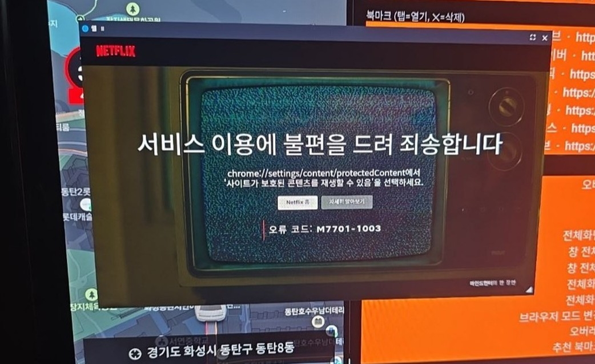

🌐 Web Overlay
A general-purpose overlay that opens any website in a floating window. It manages bookmarks too.
What is this app?
Use it when you want to quickly pull up sites you check often in the car. It ships with recommended bookmarks by default, and you can add or remove the sites you want.
Key features
- Recommended bookmarks: YouTube · Naver · Chzzk · TVING · Wavve
- Add/remove your own: enter a name + address to register a bookmark
- Type any address in the address bar to open it
- Three browser modes (default / mobile Chrome / PC Chrome) — work around blocks on some sites
How to use
- Launch the app → turn on the overlay
- Bookmarks tab → opens instantly / type an address → Open
- Use "Change browser mode" to retry sites that won't play
Test results (Polestar 4)
| Site | Result |
|---|---|
| YouTube · Naver · Chzzk | ✅ |
| TVING | ✅ (succeeded after changing mode) |
| Wavve | ✅ |
| Netflix | ❌ DRM (M7701-1003) |
| Coupang Play | ❌ playback stutters |
Screenshots


💬 댓글